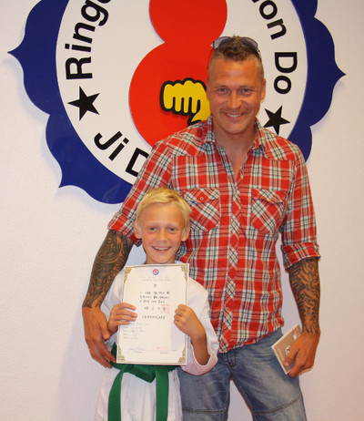

Innlegg
2013 Barn gradering.

På Søndagen var det barna sin tur til å vise hva de hadde lært. Barnegruppa er fra de som har fylt 10 og opp til de er fylt 12 år. Det var 23 stk som møtte opp til gradering. Det var mange som hadde sommerfugler i magen, men følte seg klare til å vise hva de har lært. Når klokken slo 10 var det inn i salen til Master Jon Lennart. Etter gradering var alle glade for å få ett nytt belte/stripe og et diplom som viser at de fortjener den beltegraden de har gått opp til. Jeg var tilstede under barnegraderingen og hørte med faren til ett av barna som graderte seg.
Jarle Sand far til Brot Thomas sa at etter at hans sønn hadde startet på Tae Kwon Do hadde han blitt mere konsentrert og lært seg mer å respektere andre. Han syntes det var fint at han hadde startet med Tae Kwon Do. For da kunne han lære seg å forsvare seg selv og andre. Han har lært disiplin som mann må ha når mann går på skolen og han har lært seg kroppsbeherskelse.
Bror Thomas svarte at han synes det er fint å lære seg å beskytte seg selv og ta vare på andre. Han svarte også at han har fått nye venner og han lært å samarbeide bedre med andre. Han syntes at det var litt for lette treninger.